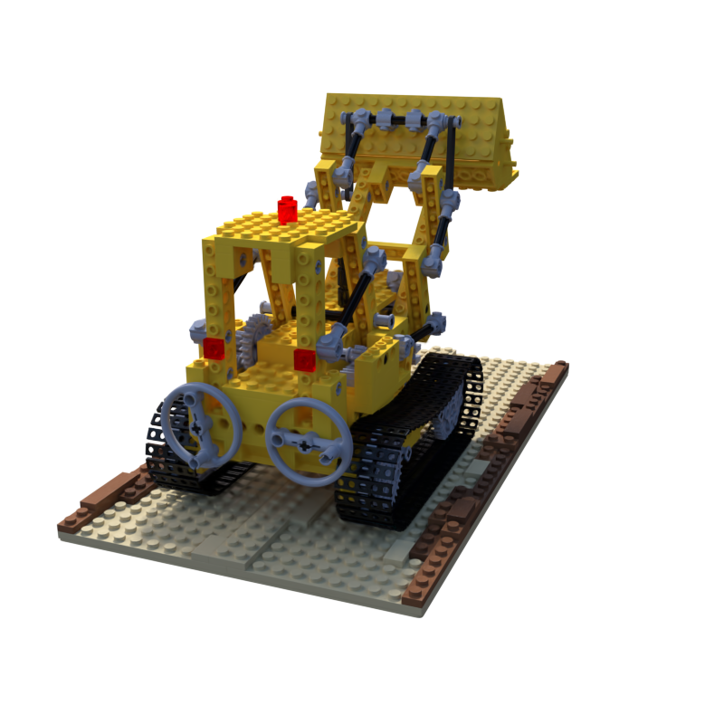
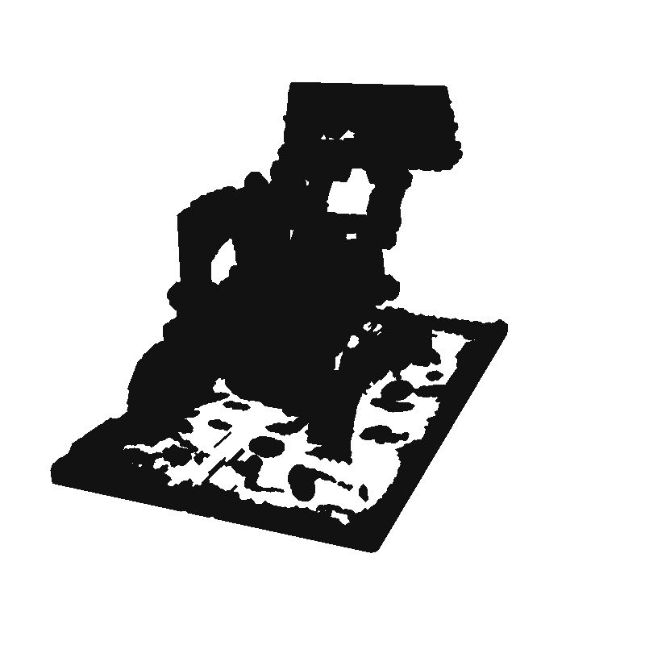
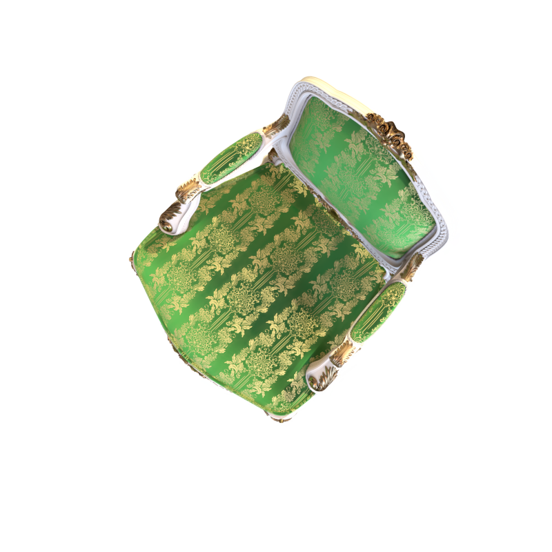
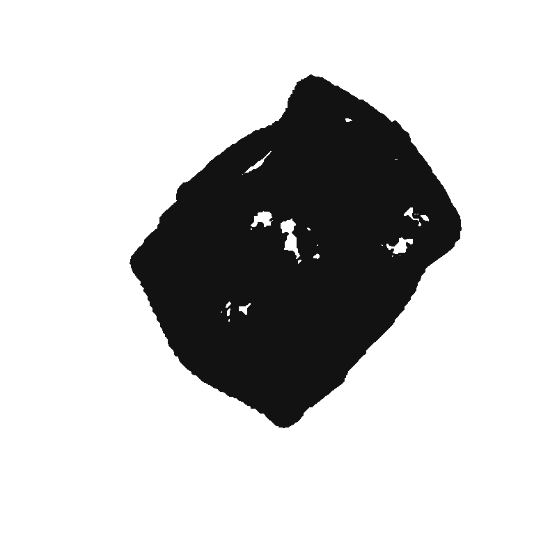

NO_GO_CONTOUR_OVERFILL · 多视角原核融合明显补足形体覆盖，但宽区域将大面积表面填实，未达到连续、可读的三维轮廓带目标。保留真实固定宽区域草模，不将高覆盖率当成视觉成功。
两场景各24构建 / 4开发 / 8保留；每个视频33相机、同一个geometry hash。未输入扫描或GT mesh，未训练网络。资产是实体三角面，始终固定；内部纹理层未实施。


Lego 的底板、车体、铲斗和抬升支架比旧稀疏图及两源区域更完整，部分开口仍保留；但车身、铲斗与驾驶室大片填黑，底板出现粗块和后方杂域，轮廓结构被面域吞并。结论为形体恢复 PARTIAL、轮廓带 NO_GO。


Chair 的椅腿、扶手、椅背整体位置和连续外周得到恢复，若干扶手开口仍可辨；但座面与靠背大量填实，俯视接近整物体剪影。结论为形体恢复 PARTIAL、轮廓带 NO_GO。
图像与视频保留所有后方轮廓区域，没有逐相机隐藏mask。打开离线旋转器无需服务器或原Gaussian模型。